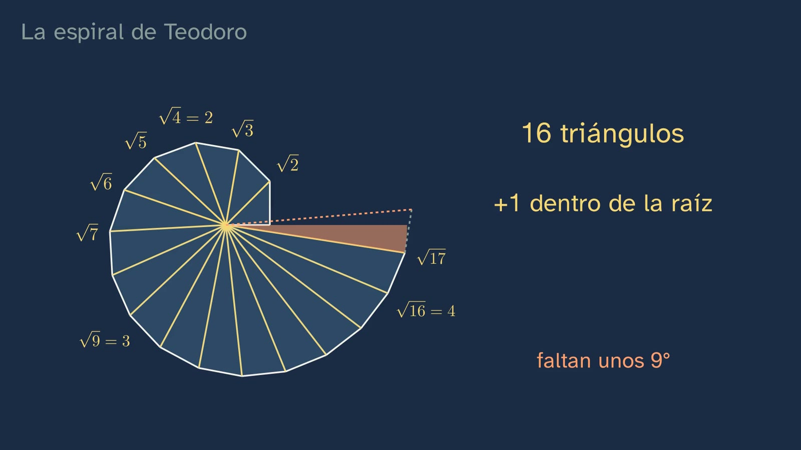
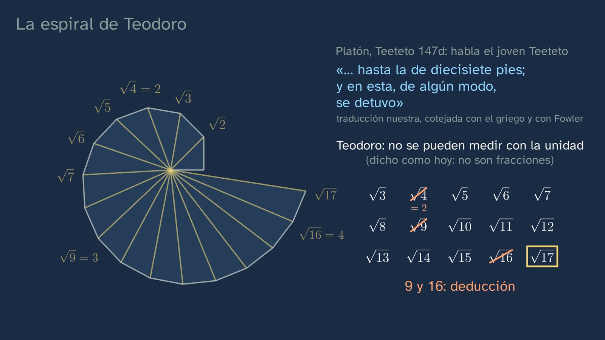
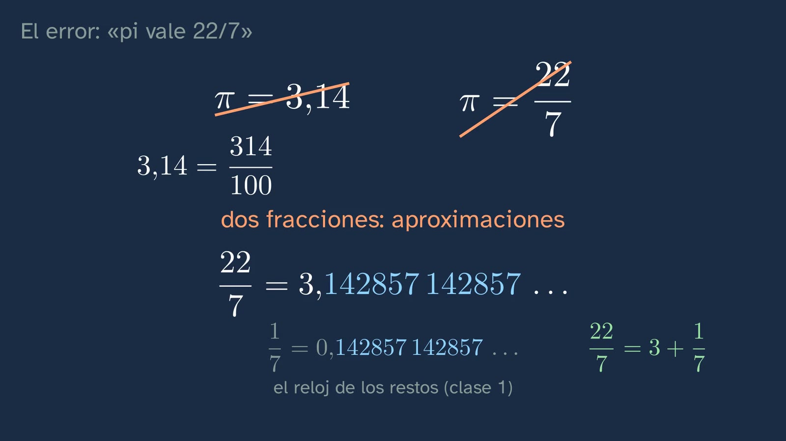
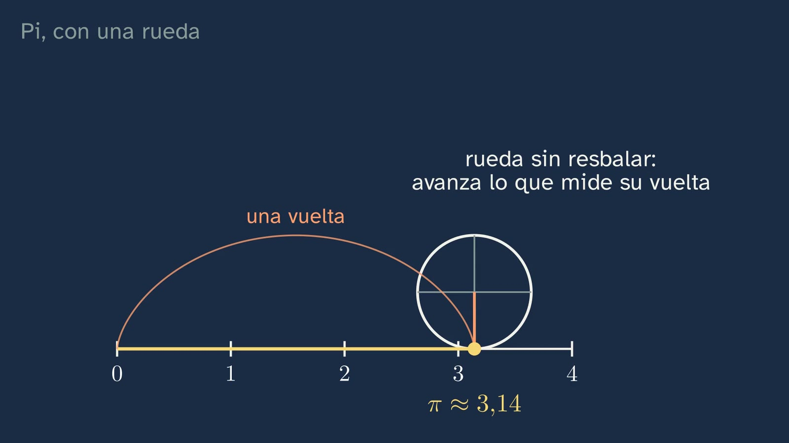
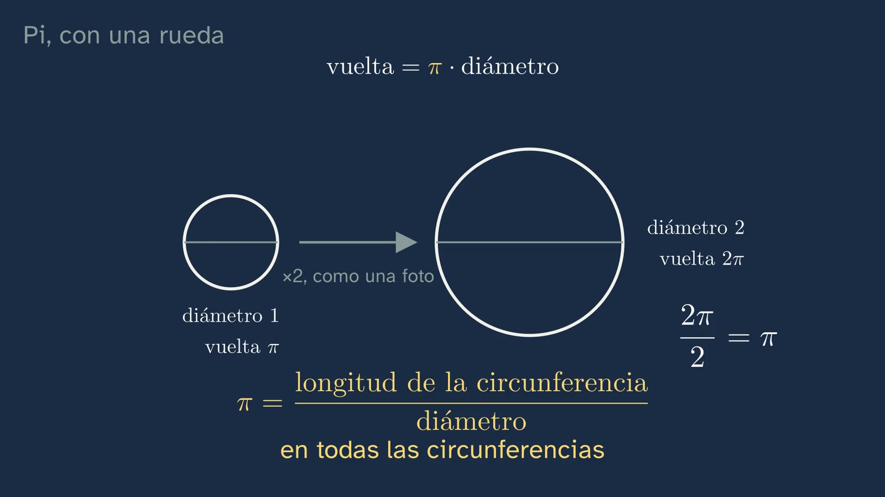
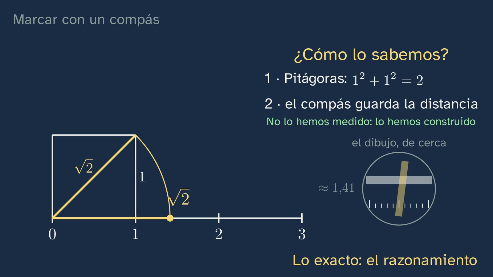
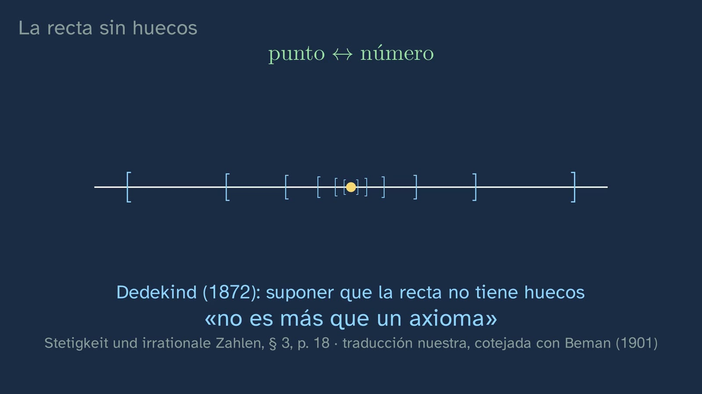

The number line with no gaps
In a nutshell
Class 2 proved that fractions leave gaps on the number line. This one answers what is left: how are the numbers in those gaps marked, and is any point left without a number in the end? It starts by retrieving what an irrational number is and correcting the three exercises from the previous class. Then comes the compass. The diagonal of the square of side 1, swung down onto the line, marks √2, and not because it is measured, but for two reasons: Pythagoras' theorem says how long the diagonal is, and the compass keeps its opening. The pencil line has thickness and the ruler gives no more than 1.41; the exactness is in the reasoning. Students construct √5 with a triangle with legs 2 and 1. The spiral of Theodorus produces one root after another, because each triangle adds one under the root, and after a bet we see that sixteen triangles fit before it goes all the way round: with hypotenuse √17, the spiral is about nine degrees short of closing. In comes Plato's Theaetetus, where the young Theaetetus says that Theodorus proved to them, one by one, that those roots cannot be measured with the unit, and that at seventeen he stopped. That he did it by drawing this spiral is a twentieth-century hypothesis, and a disputed one, and the class says so. With the roots already constructed, a mistake is taken apart: √2 + √3 is not √5, because in the triangle with legs √2 and √3 the hypotenuse is √5, and the straight path is the shortest. Pi resists the compass (it has been proved that it cannot be constructed), but a wheel of diameter 1, rolling one turn without slipping, leaves it marked on the line. The class stops to read the formula for the circumference: if the diameter doubles, the distance round doubles, and the distance round divided by the diameter always gives π, because all circles have the same shape (a big one is a small one enlarged). That is π: the ratio of the circumference of a circle to its diameter, the same in all of them. Lambert proved that π is not a fraction, and not even thirty-one trillion digits would have proved it. The second mistake, "π equals 3.14" or "π equals 22/7", falls because both are fractions; 22/7 repeats the decimals of 1/7, those of the remainder clock from class 1, and Archimedes did not say it was π. At the end, the question in the title: every point on the line has its list of digits, zoom after zoom, and every list of digits traps a single point in nested stretches. That the line has no gaps, that there is always a point inside all those stretches, cannot be proved: Dedekind wrote in 1872 that assuming it is nothing else than an axiom. Fractions and irrational numbers together, the real numbers, fill the line. A reflection on axioms and the space of physics, the map of number sets with seven trick numbers, and three exercises close the class. Ximena says goodbye with the sentence to remember: every point on the line, a real number.
Objective. By the end, students will be able to locate irrational numbers such as √2, √5 or π on the number line, construct some of them with ruler and compass, and explain what the real numbers are and how they are classified.
What this sheet adds. The class gets straight to the point, and whatever does not answer its question is here, for the teachers who want it: how to raise the perpendicular that the voice takes for granted; which numbers can be constructed with ruler and compass, and why π cannot (Wantzel, Lindemann); Archimedes' two propositions on the circle; the Theaetetus read slowly, with what specialists dispute; Dedekind's cuts, why the class's nested stretches say the same thing, and a geometry of Hilbert's in which π is a gap; and the details an attentive student will ask about: points with two lists of digits, whether zero is a natural number, and the coincidence 1.41 + 1.73 = 3.14. The classroom activity, our own, is the spiral constructed with ruler and compass or with GeoGebra.
The words. Throughout the class, "fraction" means rational number: 2/4 and 1/2 are the same one. In class 2, "irrational" was "a number that is not a fraction"; from this class on, with the real numbers now named, it is a real number that is not rational.
For readers outside Spain: the Bachillerato is the last two years of secondary school (ages 16–18). Mathematics I is the mathematics of the first year in the science and technology track; ESO is the compulsory secondary stage before it (ages 12–16). The video is in Spanish, with English subtitles; the images on this sheet come from the video and keep their Spanish text. In Spain the decimal separator is a comma, so the video writes 1,41 for 1.41; this sheet uses the decimal point. The class calls the length of a circle "la vuelta", literally "the turn"; the English subtitles say "the distance round", and so does this sheet.
Curriculum
Spain's Royal Decree 243/2022, Mathematics I, a subject of the science and technology track in the first year of Bachillerato (consolidated text in the Official State Gazette, BOE, checked on 30/09/2026 for the topic sheet; the Mathematics annex has not changed since 2022). Our translation of the official Spanish text. Times are those of the video.
| Element | What the decree says | Where the class works on it |
|---|---|---|
| Core knowledge A.1 (A. Number sense, 1. Sense of operations) | "Strategies for operating with real numbers and vectors: mental or written calculation in simple cases and with technological tools in more complicated ones." | The calculator to compare √2 + √3 with √5 (7:49); the mental calculation 22/7 = 3 + 1/7 (11:16); and exercises 2 and 3, which ask students to order and to subtract. The class does not operate with radicals: that is topic 2 (see "What the class leaves out") |
| Core knowledge C.3 (C. Spatial sense, 3. Visualisation, reasoning and geometric modelling) | "Geometric conjectures in the plane: validation by means of deduction and the proof of theorems." | Here, genuinely geometric. That the compass marks √2 exactly is validated by deduction, with Pythagoras and the compass's opening, not by measuring (2:55). The conjecture "√2 + √3 = √5" is refuted with the triangle inequality (7:18). And the bet on the spiral (5:02) is checked against what the board draws; in the activity, against a measured angle |
| Core knowledge F.1 (F. Socio-affective sense, 1. Beliefs, attitudes and emotions) | "Handling error, individually and collectively, as something that mobilises previously acquired knowledge and creates learning opportunities in the mathematics classroom." | Two mistakes, each with its pause so that students think about it first: "√2 + √3 = √5" (7:05) and "π equals 3.14, or 22/7" (10:33). And the traps in the map of number sets (15:19), which force students to look at what number it is and not at how it is written |
| Core knowledge F.3 (F. Socio-affective sense, 3. Inclusion, respect and diversity) | "Appreciating the contribution of mathematics, and the role of male and female mathematicians throughout history, to the advance of science and technology." | Theodorus in the Theaetetus (5:59), Archimedes (11:35), Lambert (9:57), Emma Haruka Iwao (10:10) and Dedekind (13:29 and 14:40). Iwao is the only woman: in this story there is not much more to choose from, and the class does not force it |
| Specific competence 2 | "To verify the validity of the possible solutions to a problem, using reasoning and argument to check their suitability." | The solutions to class 2 (0:57), above all the one for √4, where the proof has to fail and students must say at which step (1:30). √2 + √3 against √5, checked in two ways: with the triangle and with the calculator (7:18 and 7:49). The description of the competence speaks of "choosing between different ways of checking solutions" |
| Specific competence 5 | "To establish, investigate and use connections between different mathematical ideas, linking concepts, procedures, arguments and models, in order to give meaning to and structure mathematical learning." | Geometry (Pythagoras, the compass, the similarity of circles) serving numbers. And the earlier classes inside this one: the decimals of 1/7 inside 22/7 (11:11), 0.999… = 1 and 1 + √2 on the map (15:45), and the converse from class 1 in the two boxes of the zoom (12:49). Its description asks for "linking new mathematical ideas with previous ones" |
| Specific competence 6 | "To discover the links between mathematics and other areas of knowledge and to deepen those connections, relating concepts and procedures, in order to model, solve problems and develop critical, creative and innovative capacity in a variety of situations." | With Physics (14:25): time and space are written with real numbers, and whether space is continuous down to the very smallest scale is an open question; Dedekind already wrote that it need not be. With History: the Theaetetus read as a source, separating what it says, what is deduced and what is hypothesis (5:59–7:02) |
| Specific competence 7 | "To represent mathematical concepts, procedures and information, selecting different technologies, in order to visualise ideas and structure mathematical reasoning." | The whole class: the compass, the spiral, the wheel and the zoom are four ways of putting a number on the line. Its description: representations "make reasoning and proof easier" |
| Specific competence 9 | "To use personal and social skills, identifying and managing one's own emotions, respecting those of others and actively organising work in mixed teams, learning from error as part of the learning process and facing situations of uncertainty, in order to persevere in achieving goals in learning mathematics." | The two bets (5:02 and 8:27), with no penalty for getting it wrong, and the mistake raised with respect: "If you said yes, that's understandable" (7:18) |
| Criterion 2.1 | "To check the mathematical validity of the possible solutions to a problem, using reasoning and argument." | The solution for √4 (1:30), √2 + √3 (7:18–8:05) and exercise 3, which is not solved by looking at digits: you have to subtract |
| Criterion 5.1 | "To show an integrated view of mathematics, investigating and connecting different mathematical ideas." | The map of number sets (14:51–16:24), with numbers from the topic's three classes |
| Criterion 6.2 | "To analyse the contribution of mathematics to the progress of humanity, reflecting on its role in proposing solutions to complex situations and to the scientific and technological challenges that arise in society." | Only in part, and it should be said: the reflection at 14:09, on how physics uses the real line and what it still does not know about space. The class does not deal with technological challenges: Iwao's calculation appears in order to show that looking at digits does not prove |
| Criterion 7.1 | "To represent mathematical ideas, structuring different kinds of mathematical reasoning and selecting the most suitable technologies." | Choosing the tool according to the number: the compass marks √2, √5 and the spiral, but not π; the wheel marks π (8:12). It is "selecting the most suitable technologies" in the literal sense |
| Criterion 7.2 | "To select and use various forms of representation, appreciating their usefulness for sharing information." | Fraction, decimal and point as three forms of the same number: 3.14 = 314/100 (10:49), 22/7 = 3.142857 142857… (11:00) and the list of digits of each point (12:44) |
| Criterion 9.1 | "To face situations of uncertainty, identifying and managing emotions and accepting and learning from error as part of the process of learning mathematics." | The bets and the two mistakes |
What this sheet's activity adds. With GeoGebra it also works on core knowledge C.2, "Relations between geometric objects in the plane: representation and exploration with the help of digital tools", and criterion 3.2, "To use suitable technological tools in formulating or investigating conjectures or problems". And the angle of each triangle in the spiral anticipates the trigonometry of the year: "Calculating lengths and angle measures: use of trigonometry" (B.1).
What students bring from lower secondary (ESO) (Royal Decree 217/2022, consolidated text). From years 1 to 3 of ESO (ages 12–15): "Geometric relations such as congruence, similarity and the Pythagorean relation in plane and three-dimensional figures: identification and application" and "Construction of geometric figures with hands-on and digital tools (dynamic geometry software, augmented reality…)" (C.1); and "Comparing and ordering fractions, decimals and percentages: exact or approximate position on the number line" (A.4). In year 4, which has two options, A and B, the classification of numbers, which the class retrieves (14:51): in Mathematics B, "Number sets (natural, integer, rational and real): relations between them and properties" (A.3); in Mathematics A, "Number sets as a way of responding to different needs: counting, measuring, comparing, etc." (A.2) and "Some irrational numbers in everyday situations" (A.3). That is why the voice says "you probably already classified them": the list with names is only in Mathematics B. From classes 1 and 2 of the topic: the decimals of a fraction end or repeat, and conversely; 0.999… = 1; the remainder clock of 1/7; √2 is not a fraction; and neither is 1 + √2.
How the class is built
Video chapters
Almost eighteen minutes (17:59), in eleven chapters, with one thread: retrieve and correct; mark with the compass and with the spiral; a mistake; π with the wheel; another mistake; fill the line; name the real numbers; practise. It follows the channel's teaching principles and what competence 7 asks for: representing in order to reason. It has two stops to think about what is being done (the formula for the circumference, 9:07, and the axioms, 14:09), in a few sentences and with their silence. Ximena appears on camera four times, about twenty-one seconds in all: to say hello (0:00), with the hook (2:16), halfway through (8:07) and to say goodbye (17:52).
| Chapter | What happens | Why this way |
|---|---|---|
| What we'll see (0:00) | Ximena says hello. The map of the topic's six classes, with the third highlighted. "Today we're going to fill the number line": class 2 proved that there are gaps; now, mark their numbers and see whether any point is left without a number. | Topic 1 keeps its numbered map. The question grows out of the previous class's answer. |
| What you already know (0:22) | What is an irrational number? What are its decimals like? Pause (0:33). It is not a fraction, and that is why its decimals neither end nor repeat: if they did, it would be a fraction (class 1). | Retrieval before hearing the answer. Both ideas come back in the zoom (12:49) and with π (9:57). |
| Solutions to the previous class (0:57) | √3, counting threes, with a and b whole numbers and unique factorisation. √4: step two fails, because 4b² = (2b)² is a square and no two is left over (1:30). 1 + √2: if it were a fraction, subtracting 1 would make √2 one too (1:54). | Brief, and consistent with the class 2 sheet, which accepts the answer "step two". |
| Marking with a compass (2:16) | The hook: "the compass will mark many numbers that aren't fractions… but one resists it: pi". The construction of √2, slowly and with a warning that it is a repeat (2:23). How do we know? Pythagoras and the compass that keeps the distance: "We haven't measured anything: we've constructed it" (2:55). The drawing close up: the line has thickness, the ruler reads 1.41 (3:20); "The exactness isn't in the drawing: it's in the reasoning" (3:26). Stop and think: and √5? (3:32; pause at 3:44). The solution, with legs 2 and 1 (3:49). | One fully worked example and one the student does. Separating the drawing from the reasoning prepares each "exact" that comes later (the spiral, the wheel). |
| The spiral of Theodorus (4:14) | Triangle by triangle, √2 and √3 (4:14), √4 = 2 and up to √7 (4:41): "+1 dentro de la raíz" (+1 under the root). Bet: how many triangles fit before it goes all the way round? (5:02; pause at 5:11). We see it: sixteen, up to √17, and what is missing for a full turn, about 9°, is an orange wedge; the next one would overlap the first (5:16). The compass carries them onto the line (5:39). The Theaetetus: the young Theaetetus speaks; the quotation, in blue and with its reference; what is deduced (the 9 and the 16), labelled as a deduction (5:59). Why at seventeen? "Nobody knows" (6:37); the spiral is a twentieth-century hypothesis, and a disputed one (6:51). | Predicting before seeing, and an animation that answers the prediction. The history separates what the text says, what is deduced and what is hypothesis. |
| Do square roots add up? (7:05) | Stop and think: √2 + √3 = √5? (pause at 7:13). The triangle with legs √2 and √3: its hypotenuse is √5, and two sides add up to more than the third (7:18). With the calculator, 1.41 + 1.73 is more than 3 and √5 does not reach 2.24 (7:49). "What Pythagoras adds are the squares." Ximena halfway through (8:07): "every irrational number has an exact place on the line". | The typical mistake, taken apart with what has just been constructed. Topic 2 comes back to it when operating with radicals. |
| Pi, with a wheel (8:12) | With ruler and compass, impossible: it has been proved. "A wheel with a diameter of one", with a mark on 0: where will the mark land after one turn, and why? (8:27; pause at 8:40). On π: the wheel turns and moves forward at the same time, the mark draws an arc from 0 to π, labelled "una vuelta" (one turn), and rolling without slipping, the wheel moves forward the length of its circumference (8:45). To think about: the formula read aloud, with the diameter that doubles and the one that shrinks to zero, and the distance round divided by the diameter, which for a coin and for a Ferris wheel always gives π (9:07); why always π? Because all circles have the same shape: a big one is a small one enlarged. And that is π, "the ratio of the circumference to its diameter, the same in every circle" (9:33). Lambert proved that π is not a fraction (9:57); Iwao calculated more than 31 trillion digits (10:10), and looking at them proves nothing. | The wheel does what the compass cannot, and it really rolls: the arc drawn by the mark shows that it moves forward one turn, no more and no less. The formula is read, as the channel's template asks when an equation appears: what it says, what happens if a variable grows or becomes zero, what stays the same. |
| The mistake: "pi equals 22/7" (10:33) | What is wrong? (pause at 10:45). Both are fractions: 3.14 = 314/100. 22/7 = 3.142857 142857… (11:00): "They're the decimals of one seventh" (11:11), because 22/7 = 3 + 1/7 (11:16): "That's why it repeats, like one seventh". They part ways with π at the third decimal place, and Archimedes proved that π is a little less than 22/7 (11:35). | The mistake from the topic sheet, taken apart with class 1 and without talking yet about absolute error, which comes in topic 2. |
| The line with no gaps (11:49) | A point between 1 and 2. Zooming in tenfold each time: 1.4…, 1.41…, 1.414… (12:10). It is √2, but it works for any point: every point has its list of digits (12:38). Conversely: every list traps a single point in nested stretches (12:59). And what if there were none inside? A gap in the line itself. "Well then: it can't be proved that the line has no gaps": Dedekind wrote that assuming the line has no gaps "is nothing else than an axiom" (13:19–13:36). | Exactness, with the honesty of saying what is proved and what is accepted. It is the answer to the title. |
| The real numbers (13:51) | Rationals plus irrationals, the reals, and the real line. To think about: at the very start there are axioms; physics writes time and space with real numbers, and whether space is like that down to the very smallest scale nobody knows (14:09–14:47). The map from ESO (14:51). Stop and think, with traps: 0.999…, √4, 22/7, −3, √5, 1 + √2 and π (15:19; pause at 15:40). The solution, number by number and in full sentences ("The square root of four is two, which is also natural", "Minus three is an integer", "And they're all real") (15:45), and "What matters isn't how a number is written, but what number it is" (16:18). | Naming after understanding. The map mixes the topic's three classes, as spaced practice requires. |
| Practice and keep thinking (16:24) | Recap. Three exercises (16:51). The open question: can one infinity be bigger than another? (17:23). Class 4, "distances on the number line" (17:41), and the goodbye (17:52). | The solutions open the next class. The open question also goes in the video's comments. |
Bridges with other subjects. Physics and Chemistry: the core knowledge "Kinematic variables as functions of time in the different motions an object can have…" (block D, year 1) writes position and instant with real numbers, which is what the class says at 14:25; and the wheel is a measuring instrument, with all its limits. First-year Philosophy: "The philosophy of science: nature, problems and limits of scientific knowledge" (B.1), for the axioms and the question about space; and "Physical entities and ideal objects: the problem of universals" (B.2), which is the ground of the open question in class 2. History: the Theaetetus as a source, with what it says, what is deduced and what is conjectured.


A plan for a 50-minute lesson
Designed for watching the whole video in class, in sections, with the student worksheet.
| Minutes | What to do |
|---|---|
| 0–5 | No video, in pairs: "Before watching the video", on the worksheet. Swing down the diagonal of a 5 cm square with the compass and measure where it lands; √9 + √16 against √(9 + 16); and the bet: will it be possible to mark π with ruler and compass? |
| 5–8 | Video from 0:00 to 2:16: the map, the retrieval question (stop at 0:33 and answer aloud) and the solutions to class 2. If these have already been corrected in class, skip from 0:57 to 2:16. |
| 8–13 | Video from 2:16 to 3:44: the compass and why it is exact. Compare with what they measured at the start: why did their ruler give no more than 1.41? Stop at 3:44 and construct √5 on the worksheet, in pairs (two minutes). |
| 13–16 | Video from 3:49 to 5:11: the solution for √5 and the spiral. Stop at 5:11: everyone writes down their bet. |
| 16–21 | Video from 5:16 to 7:05: the whole spiral, the Theaetetus and the hypothesis. No video, one minute: the worksheet's three-column table (what the text says, what is deduced, what is hypothesis). |
| 21–24 | Video from 7:05 to 8:12: stop at 7:13 and vote by show of hands; recall the √9 + √16 from the start. Ximena halfway through. |
| 24–29 | Video from 8:12 to 10:33: the wheel (stop at 8:40 and predict), the formula read aloud, Lambert and Iwao. |
| 29–32 | Video from 10:33 to 11:49: the 22/7 mistake (stop at 10:45). |
| 32–38 | Video from 11:49 to 15:40: the zoom, the stretches, Dedekind, the real numbers, the reflection and the map. Stop at 15:40 and fill in the worksheet's classification table in pairs. |
| 38–41 | Video from 15:45 to the end (17:59): solutions to the map, exercises and open question. |
| 41–50 | Exercise 2, ordering without a calculator, in pairs, and the whole-class discussion: it is the one that benefits most from having the teacher there, because it forces students to compare squares. Homework: exercises 1 and 3 and the open question. |
The spiral activity (about 35 minutes) does not fit in this lesson: it is for another one, or for the group that wants more.
Typical mistakes and how they are handled
With an honest warning: as far as we know, none of them has been measured with Spanish Bachillerato students. For the fourth there is a related study, with prospective secondary teachers (read in its abstract, not in full); the rest are confusions the design anticipates.
- "√2 + √3 = √5", and in general √(a + b) = √a + √b. The class raises it with a pause (7:05) and takes it apart twice: with the triangle with legs √2 and √3, whose hypotenuse is √5, and the triangle inequality (Euclid, Elements I.20); and with the calculator (7:49). For anyone who does not trust decimals, a counterexample with whole numbers: √9 + √16 = 3 + 4 = 7, and √(9 + 16) = √25 = 5. And another route, algebraic: (√2 + √3)² = 5 + 2√6, which is more than 5. What must be made clear is the class's sentence: Pythagoras adds the squares, not the roots. Topic 2 ("Calculating without rounding: radicals") comes back to it when operating with roots. A warning: 1.41 + 1.73 gives exactly 3.14, and some student will think that √2 + √3 is π. It is a rounding coincidence: with more digits, 1.4142 + 1.7321 = 3.1463, and √2 + √3 = 3.14626…, which parts ways with π = 3.14159… at the third decimal place.
- "π equals 3.14", or "π equals 22/7". It is tackled head-on (10:33): both are fractions, and π is not. Teachers should know something a curious student may find: in the text of Archimedes that survives, proposition 2 of Measurement of a Circle says that the area of a circle is to the square on its diameter as 11 to 14, and that amounts to π = 22/7. But it is proposition 3 that proves the inequality 3 + 10/71 < π < 3 + 1/7, and Heath warns that proposition 2 cannot be in its right place, because it uses the result of proposition 3 (see "Compass, wheel and axiom, in depth"). That is why the class says what Archimedes proved, that π is less than 22/7, and not what he thought.
- "If π is the distance round divided by the diameter, it is a quotient, and therefore a fraction." The class puts it in plain sight: the board writes vuelta/diámetro = π (distance round over diameter) next to a coin and a Ferris wheel (9:20), and the voice closes by saying that π is "the ratio of the circumference to its diameter" (9:47). An attentive student will object. A fraction is the quotient of two whole numbers. The distance round and the diameter of a circle are never both whole numbers (nor both fractions): if the diameter measures 1, the distance round measures π; if the distance round measures 1, the diameter measures 1/π. That π is a quotient of two lengths says nothing; that it is not a quotient of two whole numbers is what Lambert proved. It is the same trap as √2 = diagonal : side.
- Confusing the irrational number with its decimal approximation: "√2 is at 1.41", or "since I can't write it out in full, it has no exact place". The class deals with it twice: the compass marks the point without measuring it, and the ruler only gives 1.41 (2:55–3:30); and every point has its list of digits even if it never ends (12:44). Sirotic and Zazkis (2007b) asked prospective secondary teachers to locate √5 exactly on the number line, the same question this class asks at 3:32, and found "confusion between irrational numbers and their decimal approximation" and an overwhelming reliance on the latter. That is why exercise 1 asks for the construction, not the decimal, and it is best not to accept "√10 is at 3.16".
- Classifying by appearance. "0.999… is not natural, because it has a decimal point"; "√4 is irrational, because it has a root sign"; "22/7 is irrational, because it looks like π"; "1 is natural, so it is not rational". These are the traps in the stop and think (15:19), and the class closes them with its sentence: what matters is not how a number is written, but what number it is (16:18). The last confusion, about the nested sets, is handled by pointing at the map: 1 is inside the natural numbers, which are inside the integers, which are inside the rationals, and everything, inside the reals.
- "With more digits we will eventually see whether π repeats", or the opposite myth, "every number is in the digits of π, your date of birth too". The class takes the first apart (10:08): no finite number of digits says anything about the ones still missing, and what we know comes from Lambert's proof. The second has not been proved: whether every sequence of digits appears in π, or even whether each digit appears infinitely often, is not known (English Wikipedia, "Normal number"; MathWorld, "Normal Number"). It is a good example, for class, of a sentence that circulates as a fact and is a conjecture.


Questions and solutions
Stop and think (in the video)
- What does it mean for a number to be irrational? And what are its decimals like? (0:22; the pause, at 0:33) That it is not a fraction, the quotient of two whole numbers. That is why its decimals neither end nor repeat: if they ended or repeated, it would be a fraction (class 1). The order matters: first the definition, then the consequence (see mistake 1 on the class 2 sheet).
- How would you mark the square root of five? (3:32; the pause, at 3:44) 5 = 2² + 1². One leg of 2 on the line, from 0 to 2; the other, of 1, perpendicular at 2; the hypotenuse measures √5 by Pythagoras, and the compass, with its point on 0, carries it to the line: it lands at 2.236…, a little beyond 2. It is the only way with whole-number legs, because 5 is a sum of two squares only as 4 + 1. You also get there with the spiral, with four triangles. Marking criteria: the decomposition 5 = 2² + 1², the right angle drawn (with a set square or as in "Compass, wheel and axiom, in depth") and the two reasons from 2:55 to say why it is exact.
- How many triangles fit before the spiral goes all the way round and overlaps the first? (5:02; the pause, at 5:11) Sixteen, with hypotenuses from √2 to √17. The angle of triangle k at the centre satisfies tan θ = 1/√k (the opposite leg measures 1 and the adjacent one √k): 45° the first, 35.26° the second, exactly 30° the third. The sixteen together add up to 351.15°, and 8.85° are missing for a full turn. With the seventeenth (hypotenuse √18) you reach 364.78°: it goes past the full turn and covers the first triangle over its first 4.78°. To discuss the bets, it helps to see that the first triangles open wide (45°) and the following ones less and less. The calculation of the angles comes with the year's trigonometry.
- Is the square root of two plus the square root of three the square root of five? (7:05; the pause, at 7:13) No: it is greater (see mistake 1).
- A wheel with a diameter of one, with a mark at the bottom, on zero, rolls one full turn without slipping. Which number will the mark land on? And why exactly there? (8:27; the pause, at 8:40) On π, a little after 3. Rolling without slipping means that each piece of the rim touches the ground once and leaves its own length on it: after one turn, the wheel has moved forward the length of its circumference, π · 1. The second question is the one worth marking: "because the formula says so" is not a reason; "because the rim unrolls onto the line" is. In the video, the wheel turns and moves forward at the same time, and the mark draws its path, an arc (a cycloid) that leaves 0 and comes back to the line at π, labelled "una vuelta" (one turn): so you can see that the mark touches the ground again just as the turn is completed.
- Some people say: pi equals three point one four, or pi equals twenty-two sevenths. What is wrong? (10:33; the pause, at 10:45) That both are fractions (3.14 = 314/100 = 157/50) and π is not: they are approximations. And 22/7 repeats, with the decimals of 1/7.
- Where does each of these go? 0.999…, √4, 22/7, −3, √5, 1 + √2 and π (15:19; the pause, at 15:40) 0.999… = 1 and √4 = 2, natural numbers (and therefore integers, rationals and reals). 22/7, rational, not an integer. −3, an integer, not natural. √5, irrational: it is proved like √2, counting fives (in a² they come in pairs; in 5b², one is left over). 1 + √2, irrational (class 2, exercise 3). π, irrational (Lambert). All of them, real. With either of the two conventions about zero (see "Compass, wheel and axiom, in depth"), 1 and 2 are natural numbers.

The two stops to think
- The formula for the circumference (9:07–9:54). The voice reads the formula, says that the distance round divided by the diameter always gives π, "whether it's a coin or a Ferris wheel", and asks "Isn't that strange? Why should it always come out as the same number?". It answers straight away: all circles have the same shape, and a big one is a small one enlarged. And it closes with what π is: "the ratio of the circumference to its diameter, the same in every circle". The argument, for anyone who wants more rigour: two circles in the plane are always similar, one is the other enlarged (a homothety with ratio k); enlarging multiplies every length by k, that of any inscribed polygonal line and, in the limit, that of the circle; so the distance round and the diameter are multiplied by the same k and their quotient does not change. That this constant quotient exists is what allows π to be defined. It is best not to go beyond what the class says: we are talking about circles in a plane.
- Axioms and the space of physics (14:09–14:47). Three things students will ask. Are axioms self-evident truths? In the modern sense, no: they are the starting point that is accepted, and the class says so. Then is the line with no gaps a whim? Not that either: it is the line we picture, and without it there would be no point where the wheel lands (see, in depth, Hilbert's geometry without that axiom). Is space discrete? Nobody knows, and that is how it should be said: quantum gravity is still "under construction" and there are hardly any experiments that test it (Stanford Encyclopedia of Philosophy, "Quantum Gravity", 2024 revision); the existence of a minimal length does not imply that space is discrete (Hossenfelder, 2013, § 5). No theory says that space has "gaps" in Dedekind's sense. The teacher can quote Dedekind on the same page as the axiom, which is what the class does, and leave the question open.


From the student worksheet
- Before watching the video: the diagonal of a 5 cm square, swung down with the compass. It measures 5√2 = 7.07 cm, so it lands at 1.41 units. You cannot read more because the ruler has millimetre marks and the line has thickness: with an error of half a millimetre, a diagonal of 70.7 mm gives between 1.404 and 1.424 units, and already the second decimal place is doubtful (this is the calculation from the class's fact-check). It is exactly what the class will say at 3:20.
- √9 + √16 against √(9 + 16). 3 + 4 = 7 and √25 = 5: they are not equal. Anyone who sees this before the video reaches 7:05 with the counterexample in hand.
- Will it be possible to mark π with ruler and compass? No: it has been proved impossible (Lindemann, 1882). It is a bet: getting it right is not required.
- While you watch the video. These are the stop-and-think questions above, in the order of the video, plus three more. "Why is the point the compass marks exactly √2, if your drawing is not?": because Pythagoras says how long the diagonal is and the ideal compass keeps that distance; the exactness is in the reasoning, not in the line. The Theaetetus table: what the text says, that Theodorus showed them, taking them one by one, that the roots of 3 and of 5 cannot be measured with the unit, up to that of 17, and that at that one he stopped; what is deduced, that the root of 4 was not needed and, for the same reason, it is understood that neither were those of 9 and 16; what is hypothesis, that he drew a spiral and stopped where it was about to overlap itself. "What cannot be proved about the line? What is it, according to Dedekind?": that it has no gaps, that is, that there is always a point inside all the nested stretches; Dedekind wrote that assuming it is nothing else than an axiom, a starting point that is accepted. "If the diameter of a wheel doubles, what happens to the distance round? And to the distance round divided by the diameter?": the distance round doubles, and the division still gives π, because all circles have the same shape: when you enlarge, the distance round and the diameter grow in the same proportion. That is π, the ratio of the circumference of a circle to its diameter. "What does √2 + √3 have to do with your calculation 2 from before the video?": √9 + √16 = 7 and √25 = 5 is the same mistake with whole numbers, without a calculator. "Why does 22/7 have the same decimals as 1/7?": because 22/7 = 3 + 1/7, and adding 3 only changes the whole-number part. The classification table: 0.999… and √4, in all five columns except "irrational" (they are 1 and 2); 22/7, rational and real; −3, integer, rational and real; √5, 1 + √2 and π, irrational and real.
- The construction, with gaps (√13). 13 = 3² + 2². Legs 3 and 2: one on the line, from 0 to 3; the other, of 2, perpendicular at 3. The hypotenuse measures √13 by Pythagoras' theorem. Compass on 0, opened to the end of the hypotenuse; the arc cuts the line between 3 and 4 (√13 = 3.6055…). It is exact for the class's two reasons. With the spiral it would take twelve triangles (triangle k gives √(k + 1)). And there is no other way with whole-number legs: 13 is only 9 + 4.
Practice (the solutions open class 4)
- Mark the square root of ten with a compass, using a single triangle. Hint: ten is nine plus one. 10 = 3² + 1². One leg of 3 on the line, from 0 to 3; the other, of 1, perpendicular at 3; by Pythagoras, the hypotenuse measures √(9 + 1) = √10; the compass, with its point on 0 and opened to the end, carries it to the line, which it cuts at 3.1622…, just after 3. With the spiral it would take nine triangles; with this one, one. Marking criteria: the decomposition, the right angle, the arc centred at 0 and the two reasons why it is exact. What will come up: legs 1 and 3 placed the other way round (1 on the line and 3 standing up): just as valid. Someone will do 10 = 5 + 5, with two legs of √5: valid, but it requires constructing √5 first, so it is not "a single triangle" from the unit. And someone will give "3.16" as the answer: that is not what is asked (see mistake 4). An observation worth making: √10 lands very close to π, a little beyond it (3.1622… against 3.1415…). Being close is not being equal: √10 can be constructed with a compass, and π cannot. For those who are ahead: between 2 and 17, a single triangle with whole-number legs gives √2, √5, √8, √10, √13 and √17 (as well as 4, 9 and 16, which are squares). √17 = √(4² + 1²) fits in one triangle, even though the spiral needs sixteen.
- Put in order, from smallest to largest, the square root of two, one point four one, ninety-nine seventieths and one point four one four two. 1.41 < 1.4142 < √2 < 99/70. Without a calculator: 1.41 < 1.4142 can be seen in the digits. To compare with √2, compare the squares, because between positive numbers the order of the squares is the order of the numbers: 1.4142² = 1.99996164, less than 2, so 1.4142 < √2; and (99/70)² = 9801/4900, and 9801 is more than 2 · 4900 = 9800, so 99/70 > √2. In decimals, 99/70 = 1.4 + 1/70 = 1.4142857142857…: the period 142857 of 1/7 comes back, because 70 = 7 · 10 and 1/70 is 1/7 shifted one place. Marking criteria: each comparison, justified; with a calculator it is also valid, if students say why it can be trusted here (the differences, 0.0000136 and 0.0000722, are much larger than what a 10-digit display rounds). What will come up: "1.4142 is √2": no, a decimal that ends is a fraction (class 2). To make a link: 99/70 is one of the fractions from Theon's rule on the class 2 sheet, and that is why its square misses by so little: 99² − 2 · 70² = 1.
- Which is closer to pi, three point one four or twenty-two sevenths? 22/7, narrowly: 22/7 − π = 0.00126…, and π − 3.14 = 0.00159…. You have to subtract, because looking at digits is not enough: both part ways with π at the third decimal place (3.140… and 3.142… against 3.141…), one below and the other above. With π = 3.141593 it is enough: 3.142857 − 3.141593 = 0.001264 and 3.141593 − 3.14 = 0.001593. Marking criteria: both differences, each one subtracting the smaller from the larger, and compared. What will come up: "3.14, because it has the same digits as π" (22/7 also starts with 3.14); and "22/7 is worse, because it overshoots" (what counts is the distance, not the side). Where it continues: the distance between two numbers on the line, |x − a|, is class 4, the next one, which opens with these solutions; and the absolute and relative error of an approximation are worked on in topic 2, class 2, "How wrong are we?". Here it is answered as a difference, without calling it "error" yet.

More from the student worksheet
- One more, to revise class 1: what fraction is 0.142857 142857…? And 3.142857 142857…? With the trick from class 1, multiplying by 10⁶ because the period has six digits: 999,999 · 0.142857… = 142,857, so it is 142857/999999 = 1/7 (999,999 = 7 · 142,857). And 3.142857… = 3 + 1/7 = 22/7. It is the other side of 11:00: the fraction hidden behind some repeating digits.
- One more, to revise class 2: prove that √5 is not a fraction. We assume √5 = a/b, with a and b positive whole numbers. Squaring, a² = 5b². In a², each prime factor appears twice: the fives come in pairs (there may be none). In 5b², the fives of b² come in pairs, and one is left over. It is the same number, and a number factorises into primes in only one way: contradiction. Marking criteria: those on the class 2 sheet for √3. It is the class's sentence at 16:02 ("it's proved like root two, by counting fives"), carried out.
- For those who want more: the spiral, and another way of measuring. It is this sheet's activity, with its solutions: with a unit of 2 cm, √4, √9, √16 and √17 should measure 4, 6, 8 and 8.25 cm; carried to the line, √2, √3, √4 and √5 land at 2.83, 3.46, 4 and 4.47 cm from O; the calculated angle is 8.85°, and to be sure you need a calculation, not a drawing. In the taxi driver's problem, twelve corners, which form a tilted square, with distance round 24, diameter 6 and quotient 4.
- A challenge: with a single triangle with whole-number legs you can mark √2, √5, √10, √13 and √17. Why not √3? How would you mark it? The squares of whole numbers are 0, 1, 4, 9…, and no sum of two of them gives 3 (1 + 1 = 2 and 1 + 4 = 5). So √3 needs a leg that is not a whole number: the spiral's, legs √2 and 1. For those who want to keep going: it also comes out in one go with the mean proportional (see "Compass, wheel and axiom, in depth").
Keep thinking. There are infinitely many fractions, and infinitely many irrational numbers. Are there as many of one as of the other? Can one infinity be bigger than another? The class leaves it open, and it is best not to close it straight away. This one does have a mathematical answer, and teachers should have it. Some pointers for the discussion:
- First, what "as many as" means. With finite sets, you count; with infinite ones you cannot get to the end. The idea that works is pairing: there are as many if they can be paired off one to one, with none left over. Galileo already stumbled on this in 1638: the squares (1, 4, 9…) are fewer than the numbers, because many numbers are not squares, and at the same time they pair off with them (each number with its square). His conclusion, in Salviati's words: "the attributes 'equal,' 'greater,' and 'less,' are not applicable to infinite, but only to finite, quantities" (Discorsi, first day, in the translation by Crew and de Salvio, 1914, pp. 32–33). It is a good first position for class.
- Cantor's answer. Cantor proved in 1874 that the fractions can be put in a numbered list, paired with 1, 2, 3…, and the real numbers cannot; the idea of pairing one to one appears there for the first time, although without a name (MacTutor, "Georg Cantor"; English Wikipedia, "Cantor's first set theory article"). Since the rationals fit in a list and the reals do not, the irrationals do not fit either: in that sense there are more irrational numbers than fractions, and one infinity can be bigger than another. One way of making the list of the positive fractions, so that students can see it: order them by the sum of numerator and denominator (1/1; 1/2, 2/1; 1/3, 3/1; 1/4, 2/3, 3/2, 4/1…), skipping repeats such as 2/2.
- A link with this class. In the same 1874 article, Cantor proved that the algebraic numbers, those that are a root of an equation with whole-number coefficients (among them, all those the compass marks), also fit in a list. So, in that sense, almost all real numbers are like π: transcendental, and no compass marks them.
- The teacher moderates and does not close. Galileo and Cantor do not contradict each other on the facts (both pair the squares with the numbers), but on what they decide to call "as many as". That can indeed be discussed.
Compass, wheel and axiom, in depth

Raising the perpendicular, with ruler and compass. The class takes it for granted (4:01 and 4:25). It is proposition I.11 of Euclid's Elements: to raise a perpendicular at a point C of a line, take two points D and E on the line at the same distance from C (with the compass), construct an equilateral triangle DFE on DE and join C to F. The angles DCF and ECF are equal, because the triangles DCF and ECF have all three sides equal, and two equal adjacent angles on a line are right angles. With a set square it is quicker, and in class that is fine; but students should know that the right angle can also be constructed.
Which numbers can be constructed with ruler and compass, and why π cannot. Starting from a segment of length 1:
- The fractions, all of them: dividing a segment into equal parts is Thales' construction (Euclid, Elements VI.9). It is what ESO calls the "exact position" of a fraction on the number line.
- Square roots: with Pythagoras, as in the class, or in one go with the mean proportional (Euclid, Elements VI.13). On a segment of length 1 + n draw a semicircle, and the perpendicular raised at the point that separates the 1 from the n measures √n. For √10: a semicircle on 11, and the perpendicular at 1 from one end. It is a good extension for anyone who has done exercise 1.
- And nothing more than what comes from the unit with sums, differences, products, quotients and square roots, repeated as often as you like. Lindemann sums it up at the start of his 1882 article: every construction with compass and ruler comes down to solving equations of the first and second degree (p. 213). The rigorous proof that this is all that can be constructed was given by Pierre Wantzel in 1837, and with it he proved that the cube cannot be doubled (constructing ∛2) nor an arbitrary angle trisected (MacTutor, "Pierre Wantzel"; Waldschmidt, 1983, p. 95).
- Not π: Lindemann proved in 1882 that π is not a root of any equation with rational coefficients, of any degree; it is said to be transcendental. Every constructible number, on the other hand, is a root of one, because it comes from chaining equations of the first and second degree; so π cannot be constructed. Lambert had already conjectured it in his memoir: if π is transcendental, "it admits no geometric construction" (Waldschmidt, 1983, p. 95; our translation from the French). Constructing a segment that measures π and squaring the circle (a square with the area of a given circle) are the same problem: the circle of radius 1 has area π, the square would have side √π, and from π to √π, and back, you go with the mean proportional. Hence the expression "squaring the circle" for the impossible.
- The wheel does not cheat: it is not a ruler-and-compass construction, but an instrument that measures by rolling. The class does not say otherwise: it says it is another way of marking it.
Archimedes: proposition 2 and proposition 3. In Measurement of a Circle, as it survives, proposition 2 says that the area of a circle is to the square on its diameter as 11 is to 14. Since the area is π · d²/4, that is π/4 = 11/14, that is, π = 22/7. Proposition 3 says that the ratio of the circumference to the diameter is less than 3 + 1/7 and greater than 3 + 10/71 (Heath, 1897, p. 93). Heath comments on that same page: "The text of this proposition is not satisfactory, and Archimedes cannot have placed it before Proposition 3, as the approximation depends upon the result of that proposition." That is why the class says what he proved, a strict inequality: π is a little less than 22/7 (3.1408… < π < 3.1428…). And that is why a student who reads proposition 2 may object: it is a good opportunity to explain that ancient texts reach us copied, and sometimes badly. Lambert, in 1768, still cites "la fraction 11/14 trouvée par Archimède" (the fraction 11/14 found by Archimedes, p. 266).
What thirty-one trillion digits do not prove. Emma Haruka Iwao's calculation, finished in January 2019 and announced on 14 March that year, gave 31,415,926,535,897 digits of π (Google Cloud Blog; A. J. Yee, numberworld.org). It is no longer the record: Iwao herself reached 100 trillion in 2022, and 314 trillion were reached in November 2025 (Yee, y-cruncher page; Guinness World Records). The class does not say it is the record. The Spanish billón is 10¹², an English trillion: the video says "treinta y un billones", thirty-one trillion. None of these lists, however long, says anything about the digits still missing: we know that π does not repeat thanks to Lambert. And that any sequence appears in its digits has not been proved (see mistake 6).
The Theaetetus, read slowly. The passage is 147d. The speaker is Theaetetus, a young pupil of Theodorus, answering Socrates; Plato writes the dialogue, but does not tell it in his own voice, and that is why the class says "Theaetetus says". In full, in our own translation, checked against Burnet's Greek (1903) and the English translations of Fowler (1921) and Jowett: "Theodorus here was drawing something for us about powers: of the one of three feet and of the one of five he showed us that they are not commensurable in length with the one of one foot; and so, taking them one by one, up to the one of seventeen feet. And at this one, somehow, he stopped." The "powers" are squares of 3, 5… square feet in area, and what cannot be measured with the foot is their side: in our language, √3, √5… Five details for teachers:
- The verb. ἔγραφε can be read as "was drawing" or "was writing": Fowler translates "was drawing some figures", and Jowett, "was writing out". Those who defend the spiral rely on the first; the text does not say what he drew.
- "Somehow". πως: Fowler and Jowett do not translate it; the class keeps it in the quotation on the board.
- "He stopped". ἐνέσχετο means "he stopped" according to the Liddell, Scott and Jones dictionary, which cites precisely this passage. Knorr (1975) read it as getting entangled, running into difficulty, and supposed that Theodorus did not manage to prove the case of 17; Burnyeat refuted this, the ancient scholiast of the Theaetetus glosses it as a simple stop, and μέχρι ("up to"), in Plato, includes the last term (Negrepontis and Tassopoulos, 2012, § 1.1). The class says "he stopped", and takes no side.
- What it does not say. The text names the root of 3, that of 5 and that of 17. That he skipped 4 can be read in the text (from 3 he goes to 5); that he also skipped 9 and 16 is the usual deduction, and that is why the board labels it as a deduction. Some propose a different list: Ofman and Brisson argue that Theodorus did only the odd numbers, from 3 to 17 (Ofman, 2024, p. 6).
- The spiral hypothesis. It was proposed by J. H. Anderhub in 1941, in a little book printed as a Christmas present, Joco-Seria: Theodorus would have stopped at √17 because the next triangle overlapped the first (as told by Echterling, 2019, pp. 11–12, and Gautschi, 2010, p. 1044). It is disputed. Against: Gautschi calls it "probably the least credible" (p. 1042) of the explanations proposed; Szabó gave several reasons not to believe it, and Ofman adds a textual one: the spiral forces you through all the squares from 1 to 17, and Theaetetus says that Theodorus began with 3 (Ofman, 2024, p. 6). For: Thesleff (1990, cited by Echterling), "I am sure Anderhub was right", who links it to a sentence of Proclus about a helix attributed to "Theodorus the mathematician"; and Echterling himself. Plato does not mention any spiral (we have searched the Greek and two translations), and the name "spiral of Theodorus" is modern. A practical warning: some materials tell it as a fact. The Spanish Wikipedia, for example, says that "Teodoro finalizó su espiral" (Theodorus finished his spiral) at √17. It is a good text for students to look for what is asserted without evidence.
Dedekind: cuts and nested intervals. The property that Dedekind declares an axiom is not the class's nested stretches, but the cut: "If all points of the straight line fall into two classes such that every point of the first class lies to the left of every point of the second class, then there exists one and only one point which produces this division of all points into two classes, this severing of the straight line into two portions" (Stetigkeit und irrationale Zahlen, 1872, § 3; W. W. Beman's translation, 1901, p. 11, checked against the German of the 1892 edition). Right after it he writes that "the assumption of this property of the line is nothing else than an axiom" (1872, p. 18; Beman, p. 12), which is the class's quotation. The two formulations are equivalent, with a condition the class uses without naming it: that there are no "infinitely small" segments (the axiom of Archimedes). The outline, for anyone who wants it:
- From the cut to the stretches. Given some nested stretches, each ten times shorter than the one before, split the points into two classes: those to the left of some stretch, and the rest. The cut gives a point, and that point is inside all the stretches.
- From the stretches to the cut. Given a cut, find its point digit by digit: of the ten little pieces of each stretch, choose the one that has points of the first class to its left and points of the second class to its right. The nested stretches give a point, and that point makes the cut.
- "A single point". That two distinct points cannot fit inside all the stretches is Archimedes: if a distance d separated them, however small, some stretch of length 1/10ⁿ would be shorter than d.
The English Wikipedia ("Completeness of the real numbers") puts it like this: the nested intervals theorem, "taken together with Archimedean property", is equivalent to the other forms of completeness; and it adds that, in decimals, completeness is equivalent to every infinite list of digits being the expansion of some real number, which is exactly the class's sentence at 12:59.
Why it cannot be proved: a geometry in which π is a gap. "It can't be proved that the line has no gaps" (13:25) can be justified with an example of Hilbert's. In the Foundations of Geometry (1899), to prove that his axioms do not contradict each other, he constructs a plane whose points are the pairs (x, y) of numbers from a set Ω: those obtained from 1 with the four operations and with the operation √(1 + ω²) (§ 9; Townsend's translation, 1902, pp. 17–18; the book collects the lectures of 1898–1899 and was published in June 1899). In that plane the five groups of axioms of his geometry hold, including the axiom of Archimedes, and yet Ω contains only algebraic numbers, so π is not there: on its lines, π is a gap. The axiom of completeness, which Hilbert added later (his translator says so), is the one that rules it out. And a curiosity that connects with the class: Hilbert's fifth operation, √(1 + ω²), is exactly one step of the spiral, the hypotenuse of the triangle with legs 1 and ω. So in that plane there are √2, √3, √5… up to √17 and beyond, all the spiral's numbers, but not the wheel's. That is why the axiom is needed: with the compass alone, the line would still have gaps. For the real numbers constructed from the fractions, on the other hand, "no gaps" is a theorem: Dedekind proves it in § 5 of the same work, "Continuity of the domain of real numbers". The class speaks of the line, and for the line it is an axiom.

Points with two lists of digits. The class says that every point has "its list of digits" (12:44). Points whose digits end have two: 1 = 1.000… = 0.999…, as seen in class 1, and 1.5 = 1.4999…. In the zoom this happens when the point falls exactly on a mark: you can take the little piece on the left or the one on the right. It changes nothing of what the class says (every list has its point, and every point at least one list), and an attentive student will ask about it.
Is zero a natural number? The class starts the natural numbers at one ("the counting ones: one, two, three…", 14:55) and puts zero with the integers. It is one of the two conventions in use: some books include zero among the natural numbers, and the ISO 80000-2 standard does too (Spanish Wikipedia, "Número natural", § "Convenios de notación"; English Wikipedia, "Natural number"). The decree does not settle it. The class does not need it: there is no zero on the map, and 1 and 2 are natural under both conventions. It is enough to say which convention the year's textbook follows.
A classroom activity
The spiral of Theodorus, with ruler and compass, and the missing angle (about 35 minutes, in pairs; it works on core knowledge C.3, competence 7 and, with GeoGebra, C.2 and criterion 3.2). It goes from construction to measurement, and from measurement to the class's question: what does a drawing tell us, and what does it not?
Materials: an A4 sheet, ruler, set square (or compass, to raise perpendiculars as in I.11), compass and protractor. Unit: 2 cm, so that the spiral fits (√17 · 2 cm = 8.25 cm). The student worksheet has the table, in "For those who want more".
- Predict (2 minutes). If they have not seen the video: how many triangles fit before it goes all the way round? If they have: how many degrees will be missing in your drawing, and will it be the same number for every pair?
- Construct (15 minutes). A 2 cm segment from the centre O; at its end, a 2 cm perpendicular; join its end to O: that is √2. At the end of each hypotenuse, a 2 cm perpendicular, joined to O, and so on up to hypotenuse √17 (sixteen triangles). Two checks along the way: the first triangle has 45° at O and the third, exactly 30°; and the hypotenuses √4, √9 and √16 should measure 4, 6 and 8 cm.
- Measure (5 minutes). With the protractor, the angle between hypotenuse √17 and the first leg. The calculation gives 8.85°. Write all the pairs' results on the board.
- Discuss (8 minutes). Different values will come out, sometimes by several degrees. Why? Each perpendicular and each measurement has a small error, and they accumulate over sixteen triangles. Does any pair prove that 8.85° are missing? No: the number comes from a calculation, adding the angles of each triangle (tan θ = 1/√k), which students will see with the year's trigonometry. And the question from history: if Theodorus drew in the sand, would he have noticed that the seventeenth triangle overlapped the first? Thesleff thought so, and that, drawn in the sand, the √17 one would reach "somewhat further", a little beyond 351°; Ofman, that the spiral does not fit the text. It is an opportunity to separate what the source says from what we conjecture (see "The Theaetetus, read slowly").
- Look back (5 minutes). The drawing helps you think, but the exactness is in the reasoning: it is the class's sentence at 3:26, checked with your own hands.
With GeoGebra (the same activity, about 25 minutes, at https://www.geogebra.org/geometry). With the Perpendicular Line, Circle with Center and Radius, and Intersect tools the spiral is constructed without drawing errors, and the Angle tool gives 8.85°. The final question is the same: does GeoGebra prove it? Not that either: it calculates with many digits, much better than the protractor, but calculating is not proving. Comparing the paper value with GeoGebra's shows how much the error of a drawing accumulates.
Another option, the cardboard wheel (about 20 minutes, in groups; it connects with Physics and Chemistry and with class 4). Each group cuts out a cardboard disc and measures its diameter (8 cm, for example). They mark a point on the rim, rest it on the 0 of a tape measure stuck to the table and roll the disc one turn without slipping; they write down where the mark lands and divide by the diameter. With 8 cm, the theoretical distance round is 25.13 cm; if you measure 25.0, you get 3.125; with 25.2, 3.15. The class's quotients are put together. Questions: why do they come out different? (the cardboard gets squashed, the wheel slips, the tape has millimetre marks). Can a measurement, however fine, say that π is not a fraction? No: every measurement gives a number whose digits end, which is a fraction. The class's wheel is exact because it is ideal; the cardboard one, like the compass drawing, is for thinking with.
One more, to connect with class 4: the taxi driver's circle (about 15 minutes, on squared paper). In a city with a grid of streets, a taxi does not travel in a straight line: the distance between two corners is what you travel along the streets, |x₁ − x₂| + |y₁ − y₂|. Mark a centre and all the corners at taxi distance 3 from it: there are twelve, and they form a tilted square. Measured with the taxi's own rule, each side measures 3 + 3 = 6, the distance round 24 and the diameter 6: the quotient is 4 (English Wikipedia, "Taxicab geometry", § Spheres, and checked). To say it precisely, so that nobody takes away a false idea: π does not change, it is always 3.14159…. What has changed is the way of measuring distance, and with it the figure we call a circle; that figure's quotient is 4. Class 4 works on exactly this: distance on the line is an absolute value, |x − a|, and the taxi driver's is a sum of two.

Open resources
To keep working on what the class covers, all free and without registering. Links checked on 06/10/2026.
| Resource | What it covers | How to use it in class |
|---|---|---|
| GeoGebra, Geometry | Ruler, compass, perpendiculars, intersections and angle measurement, in the browser and in many languages. Free for non-commercial use (GeoGebra non-commercial licence) | The spiral activity; constructing √5, √10 or √13 as in the class; the mean proportional for √n |
| Plato, Theaetetus 147d, on Perseus (Tufts University) | Fowler's English translation (1921), with a link to Burnet's Greek (1903) and the word-by-word dictionary. CC BY-SA 3.0 (United States) | Reading the whole passage and checking what it says and what it does not: there is no spiral. In the Greek, each word links to its analysis and its dictionary entry: that is how you can look at ἐνέσχετο |
| MacTutor (University of St Andrews): Theodorus, Archimedes, Lambert, Dedekind and "A history of Pi" | The biographies and the history of π. CC BY-SA 4.0 | For history projects. Two warnings: the data box on Theodorus's page confuses him with Theodorus the Atheist, a philosopher, and is no use for dates; and Lambert's page dates the memoir to 1768 (it was read at the Academy in 1767 and published in 1768) |
| Dedekind, Essays on the Theory of Numbers (Project Gutenberg) | Beman's English translation (1901) of Continuity and Irrational Numbers: § 3, with the axiom, and § 5, with the real numbers. Public domain | Reading § 3 with those who are ahead: it is short, and Dedekind explains why what seems obvious needs to be said |
| Lambert's memoir, scanned (Internet Archive) | The French original of 1768, with the note "Lu en 1767" (read in 1767) on p. 265 and, on p. 266, "la fraction 11/14 trouvée par Archimède". Public domain | To show a primary source: § 1 begins by saying what is going to be proved, that the diameter is not to the circumference as a whole number to a whole number |
| Heath, The Works of Archimedes (1897, Internet Archive) | Measurement of a Circle, with propositions 2 and 3 and Heath's comment, p. 93. Public domain | For mistake 2: reading both propositions and seeing why proposition 2 is in the wrong place |
| Gautschi (2010), "The spiral of Theodorus…" (author's PDF) and Echterling (2019), "What did Theodorus draw?" | The two sides of the hypothesis: Gautschi tells it and judges it "probably the least credible"; Echterling defends it and draws on Thesleff. Gautschi, open access | For teachers, or for a Bachillerato project: two specialists who disagree, each with their reasons |
| Google Cloud Blog, 14/03/2019 and the y-cruncher page (A. J. Yee) | Iwao's calculation told by her, and the list of records for digits of π, with dates and authors (the latest, 314 trillion in November 2025) | For mistake 6 and for "looking at digits does not prove": how many digits, and what they do not say |
| EDAD, "Los números reales", 4.º de ESO B (Red Descartes) | The interactive ESO unit where students learn to classify numbers, in Spanish. CC BY-NC-SA 4.0 | Revision of ESO before 14:51, for anyone arriving without the list of sets (it was not in Mathematics A) |
| Marea Verde, Matemáticas I, chapter 1 | The chapter "Números reales y complejos" (revised in 2024), with the real line, absolute value and intervals, in Spanish. Free; no licence is stated in the chapter, so we link to it | For class 4 and for practice exercises on the real line |
| Euclid, Elements, D. E. Joyce's edition (Clark University) | Propositions I.11 (the perpendicular), I.20 (two sides add up to more than the third), VI.9 (equal parts) and VI.13 (the mean proportional), with figures that move. In English, free | For the constructions in "Compass, wheel and axiom, in depth" |
What the class leaves out, and why
The class has one question, how the numbers in the gaps are marked and whether any gap is left, and whatever does not answer it stays out, even if it is good.
- Operating with radicals and rationalising, approximations and errors, and scientific notation. Many first-year Bachillerato textbooks put them in the unit on real numbers. The channel gives them a topic of their own, topic 2, "Calculating with real numbers", with two classes: "Calculating without rounding: radicals", which comes back to the mistake √(a + b) = √a + √b, and "How wrong are we?", which works on absolute and relative error and comes back to 22/7. That is why exercise 3 is answered here as a difference.
- Placing exact fractions with Thales. The class marks irrational numbers; fractions on the line belong to ESO ("exact or approximate position on the number line"). It is in "Compass, wheel and axiom, in depth".
- The transcendence of π and its proof. The class only says that it has been proved that π cannot be constructed, and that the proof "is far beyond this course". The reason, with Wantzel and Lindemann, is on this sheet.
- Constructing the reals with cuts. That is university material. The class presents the line with no gaps as an axiom, which is the honest thing for the line, and this sheet tells where it becomes a theorem.
- The sizes of infinity. They are the open question: the class does not answer it, and this sheet gives teachers Cantor's answer to moderate the discussion.
- Intervals and absolute value. The stretches of the zoom are intervals, and the distances in exercise 3, absolute values. Class 4, the next one, names them.
- The number e. It is another famous irrational (and transcendental) number. It arrives in topic 12, "The families of functions", with the exponential function.
Sources
- Royal Decree 243/2022, annex II, Mathematics, Philosophy and Physics and Chemistry, consolidated text (BOE, in Spanish): https://www.boe.es/buscar/act.php?id=BOE-A-2022-5521. Lower secondary (ESO): Royal Decree 217/2022, consolidated text (BOE, in Spanish), Mathematics in annex II: https://www.boe.es/buscar/act.php?id=BOE-A-2022-4975.
- Plato, Theaetetus 143b–d (Theodorus, geometer from Cyrene) and 147d: Greek text by J. Burnet (Oxford, 1903) and translation by H. N. Fowler (Loeb, 1921), on Perseus: https://www.perseus.tufts.edu/hopper/text?doc=Perseus%3Atext%3A1999.01.0172%3Atext%3DTheaet.%3Asection%3D147d; translation by B. Jowett, Project Gutenberg no. 1726. Liddell, Scott and Jones, A Greek-English Lexicon (1940), s. v. ἐνέχω, II.5, on Perseus.
- S. Negrepontis and G. Tassopoulos (2012), "On Theodorus' lesson in the Theaetetus 147d-e", arXiv:1205.6681, § 1.1 (Knorr, Burnyeat, the scholiast and μέχρι): https://arxiv.org/abs/1205.6681. S. Ofman (2024), "La leçon mathématique de Théodore", I, arXiv:2401.15983, p. 6 (Szabó, the list of odd numbers, the textual objection): https://arxiv.org/abs/2401.15983.
- The spiral hypothesis: J. H. Anderhub, "Genetrix Irrationalium", in Joco-Seria (Wiesbaden, 1941), not consulted; T. Echterling (2019), "What did Theodorus draw?", pp. 11–12 and note 1 (Thesleff, 1990): https://webusers.imj-prg.fr/~salomon.ofman/ENS2019/Echterling2019.pdf; W. Gautschi (2010), "The spiral of Theodorus, numerical analysis, and special functions", J. Comput. Appl. Math. 235, 1042–1052, pp. 1042 and 1044: https://doi.org/10.1016/j.cam.2009.11.054. The angles of the spiral, also in the English Wikipedia, "Spiral of Theodorus", and in Thesleff, cited by Echterling.
- Archimedes, Measurement of a Circle, propositions 2 and 3, in T. L. Heath, The Works of Archimedes (Cambridge, 1897), p. 93: https://archive.org/details/worksofarchimede029517mbp; MacTutor, "A history of Pi": https://mathshistory.st-andrews.ac.uk/HistTopics/Pi_through_the_ages/. Archimedes' dates: Heath (1897), p. xv, and MacTutor, "Archimedes".
- J. H. Lambert, "Mémoire sur quelques propriétés remarquables des quantités transcendentes circulaires et logarithmiques", Histoire de l'Académie royale des sciences et belles-lettres de Berlin, année 1761 (Berlin, 1768), pp. 265–322 (note on p. 265, "Lu en 1767"; p. 266, 11/14): https://archive.org/details/berlin-histoire-1761-pub1768/page/265/mode/1up.
- M. Waldschmidt (1983), "Les débuts de la théorie des nombres transcendants", Cahiers du séminaire d'histoire des mathématiques 4, 93–115, p. 95 (Lambert and Wantzel): https://www.numdam.org/item/CSHM_1983__4__93_0/. MacTutor, "Pierre Wantzel" (1837, the cube and the trisection).
- F. Lindemann (1882), "Ueber die Zahl π", Mathematische Annalen 20, 213–225, p. 213: https://doi.org/10.1007/BF01446522.
- Euclid, Elements I.11, I.20, VI.9 and VI.13, in D. E. Joyce's edition (Clark University): https://mathcs.clarku.edu/~djoyce/elements/elements.html.
- E. H. Iwao, "Pi in the sky…", Google Cloud Blog, 14/03/2019: https://cloud.google.com/blog/products/compute/calculating-31-4-trillion-digits-of-archimedes-constant-on-google-cloud; A. J. Yee, "Google Cloud Topples the Pi Record" and the y-cruncher list of records: http://www.numberworld.org/y-cruncher/; the 2025 record, also in Guinness World Records, "Most accurate value of pi".
- That it is not known whether π is normal: English Wikipedia, "Normal number" (which cites Bailey, Borwein, Calude and others, Experimental Mathematics, 2012), and MathWorld, "Normal Number".
- R. Dedekind, Stetigkeit und irrationale Zahlen (Braunschweig, 1872), § 3, pp. 17–19, and § 5; German text read in the 1892 edition (Internet Archive,
stetigkeitundir00dedegoog) and, for p. 18, in the 1872 edition, according to the class's fact-check; English translation by W. W. Beman, Essays on the Theory of Numbers (1901), pp. 10–12, from which this sheet's quotations are taken: https://www.gutenberg.org/ebooks/21016. - The equivalence between cuts and nested intervals with the axiom of Archimedes: English Wikipedia, "Completeness of the real numbers", and the outline on this sheet.
- D. Hilbert, The Foundations of Geometry, translated by E. J. Townsend (Chicago, 1902), § 8 (the axiom of completeness, pp. 15–16, with the translator's note) and § 9 (pp. 17–18): https://www.gutenberg.org/ebooks/17384.
- The space of physics: S. Weinstein and D. Rickles, "Quantum Gravity", Stanford Encyclopedia of Philosophy (2024 revision): https://plato.stanford.edu/entries/quantum-gravity/; S. Hossenfelder (2013), "Minimal Length Scale Scenarios for Quantum Gravity", Living Reviews in Relativity 16, 2, § 5: https://doi.org/10.12942/lrr-2013-2.
- Galileo Galilei, Discorsi e dimostrazioni matematiche intorno a due nuove scienze (Leiden, 1638), first day, in the translation by H. Crew and A. de Salvio, Dialogues Concerning Two New Sciences (New York, 1914), pp. 32–33: https://archive.org/details/dialoguesconcer00galigoog; English Wikipedia, "Galileo's paradox".
- G. Cantor (1874), "Ueber eine Eigenschaft des Inbegriffes aller reellen algebraischen Zahlen", Journal für die reine und angewandte Mathematik 77, 258–262: https://doi.org/10.1515/crll.1874.77.258; MacTutor, "Georg Cantor"; English Wikipedia, "Cantor's first set theory article".
- Zero among the natural numbers: Spanish Wikipedia, "Número natural", § "Convenios de notación"; English Wikipedia, "Natural number" (ISO 80000-2).
- Taxicab geometry: English Wikipedia, "Taxicab geometry", § Spheres; MathWorld, "Taxicab Metric".
- The study for mistake 4, read in its ERIC abstract, not in full: N. Sirotic and R. Zazkis (2007b). Irrational numbers on the number line — where are they? International Journal of Mathematical Education in Science and Technology 38(4), 477–488 (ERIC EJ765142).
- Every calculation on this sheet was checked by running it with sympy and exact fractions on 06/10/2026: the solutions, the angles of the spiral, the differences from π, the squares of 1.4142 and 99/70, the fractions behind 0.142857… and 3.142857…, and the distance round of the cardboard wheel. The examples in the class and on this sheet are our own, except those that are attributed (the spiral, to Anderhub's hypothesis; the constructions, to Euclid; the plane, to Hilbert; the squares, to Galileo).
About this class
GinCol Lab is a free science channel for curious minds. Ximena is an illustrated character, not a real person, and her voice is synthetic: computer-generated with Microsoft Azure AI Speech and not imitating any known person. The board is animated with Manim. The script and this sheet are written by an AI (Claude, by Anthropic) and reviewed by a person before publishing. Every fact has been checked in two sources or in the original, every quotation in its author's work and every calculation by running it; the hypothesis is told as a hypothesis. The images on this sheet come from the board of the video itself. This English version was translated by the same AI. If you spot a mistake, tell us: learning also means correcting.
This sheet is published under a Creative Commons Attribution 4.0 licence: you can copy it, adapt it and use it in your classroom, crediting GinCol Lab.
How to cite this sheet
GinCol Lab (2026). The number line with no gaps. GinCol Lab teacher sheet: Mathematics I · 1st year of Bachillerato · The real numbers · Class 3 of 6. https://gincollab.github.io/aula/en/matematicas-i/t01-c3/. CC BY 4.0.
GinCol Lab teacher sheet · CC BY 4.0 · Source and errata